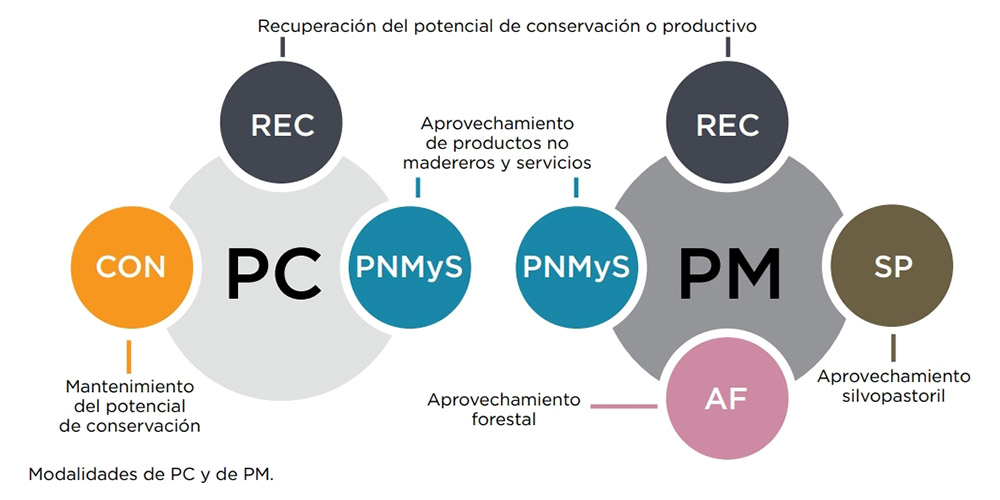

Toda intervención sobre bosques nativos debe ser presentada por los titulares ante las Autoridades Locales de Aplicación (ALA) bajo la forma de Planes de Conservación (PC), de Manejo Sostenible (PM) o de Cambio de Uso del Suelo (PCUS), o como Plan de Manejo y Conservación (PMyC) o Intervenciones Menores (IM).
Respecto específicamente de los Planes de Cambio de Uso del Suelo, debe destacarse que, son un instrumento que justifica el cambio de uso del suelo y planifica las actividades de conversión del bosque nativo a otro uso o desmonte, como la agricultura, la ganadería, la forestación, la construcción de presas o el desarrollo de áreas urbanizadas. Por definición, si bien son planes de intervención sobre bosques nativos, no son planes de usos sostenible de los mismos.
Marco Legal

Modalidades de planes de Conservación y Planes de Manejo - Fuente: Secretaría de Ambiente y Desarrollo Sustentable (actual Ministerio de Ambiente y Desarrollo Sostenible)
Los planes se elaboran de acuerdo a la reglamentación vigente en cada provincia acerca de las normas generales de manejo y aprovechamiento y respetando las pautas generales establecidas entre la Autoridad Nacional de Aplicación (ANA) y las ALA. Los planes requieren de la evaluación y aprobación de la ALA en forma previa a su ejecución y deben ser suscriptos por los titulares y por un profesional habilitado, inscripto en el registro provincial que la ALA lleva a tal efecto, en la forma y con los alcances que establezca.
Plan es el documento que sintetiza la organización, medios y recursos, en el tiempo y en el espacio, de las medidas específicas para mantener o incrementar los atributos de conservación de un bosque nativo o grupo de bosques nativos y/o del aprovechamiento sostenible de sus recursos no maderables y servicios. Debe incluir una descripción pormenorizada del terreno forestal en sus aspectos ecológicos, legales, sociales y económicos, y un inventario forestal o del recurso no maderable objeto de aprovechamiento o algún otro tipo de relevamiento con un nivel de detalle tal que permita la toma de decisiones en cuanto a la silvicultura a aplicar o a las medidas a implementar según la modalidad de que se trate y, además, un conjunto de pautas de uso a aplicar en cada una de las unidades de bosque nativo.